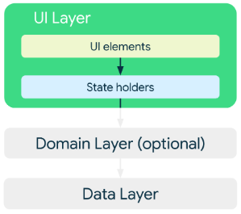

Architecture

Application Architecture Patterns
Mobile applications are typically structured using architectural patterns to separate concerns and improve maintainability.
- MVC (Model–View–Controller): Separates data (Model), user interface (View), and business logic (Controller).
- MVP (Model–View–Presenter): The Presenter handles logic and communicates between Model and View.
- MVVM (Model–View–ViewModel): Common in Android and iOS development. The ViewModel manages UI-related data and supports reactive programming.
Layered Architecture:
Mobile systems are typically divided into layers:
- Presentation Layer: User interface and interaction logic.
- Business Logic Layer: Core functionality and processing rules.
- Data Layer: Manages local databases, APIs, and data storage.